Suppose that Steven Spielberg's mid-career magnum opus, Jurassic Park (1993), reflects the filmmaker's guilty feelings about his involvement in the illegal hiring of two children killed on a "Steven Spielberg Production" in 1982. Even if true, why would this discovery matter, all these years later, in today's far more cynical times?

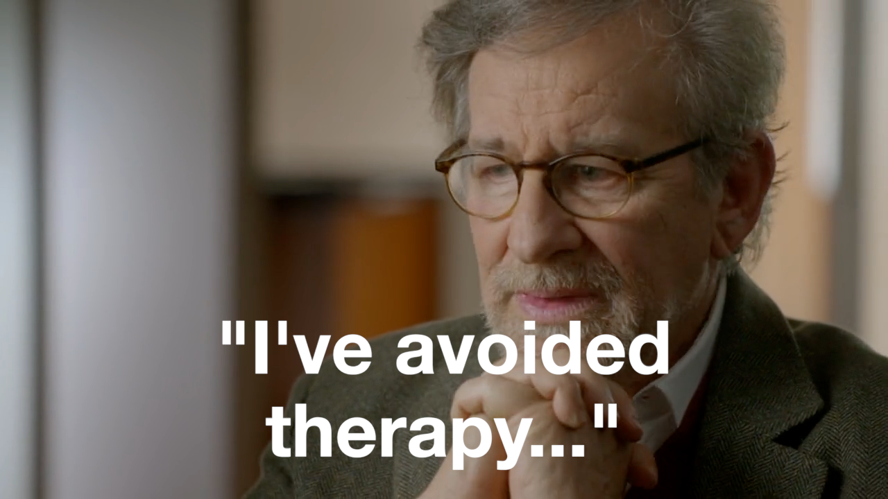
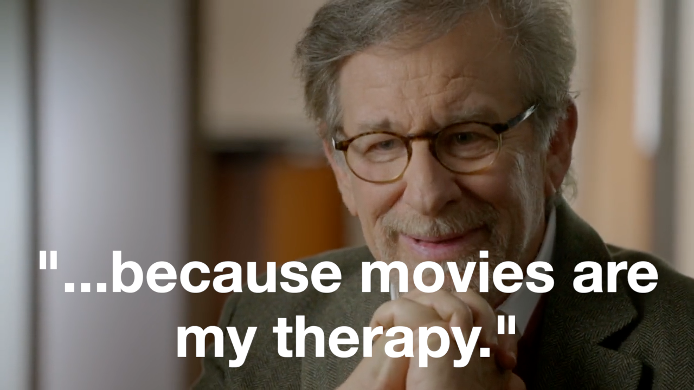
In my seminal media essay, IJPAUC? (2025), I argue that Jurassic Park (1993) is an unconscious confession. By that I mean that when Spielberg's emphasis on the pertinence of autobiography to his work is taken seriously, the evidence is overwhelming that the '90s blockbuster bears heavy imprints of the notorious 1982 Twilight Zone: The Movie helicopter accident that took the lives of two illegally hired child "extras," Myca Dinh Le (7) and Renee Shin-Yi Chen (6), along with veteran Hollywood actor, Vic Morrow (53).
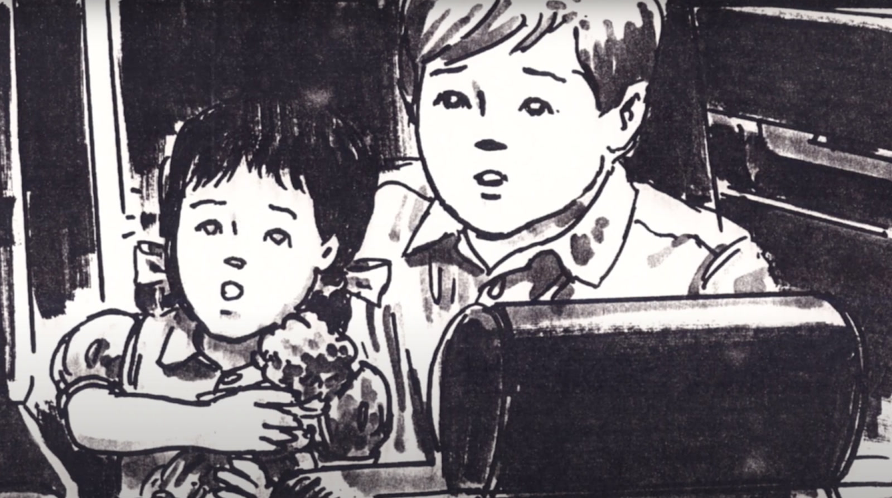
I am not the first to make the connection between Jurassic Park and the Twilight Zone accident; I am, however, the first to ask whether it constitutes a "confession." In other words, I consider Jurassic Park and its cultural legacy in light of the unanswered—and indeed largely unasked—question of whether the film's co-producer, Spielberg, in any way (perhaps indirectly) sanctioned the illegal hiring, and whether this might not help explain some of the dense and myriad allusions to the accident underlying the film's ironical, self-referential, "hypervisible" commercialism (in the words of film theorist Constance Balides).
So far, the question of assigning responsibility for the tragedy is eclipsed by the screaming, bullying maniac who'd been calling the shots that night, director John Landis, already a major figure in the American cinematic imagination. Yet someone else, orders of magnitude more significant to the cinema arts, is also implicated; or, at least, has been shielded from the question by those who were.
In the three books written about the case (Special Effects, 1987; Outrageous Conduct, 1987; Fly by Night, 2022), each by reporters who sat in on the trial, the question of Spielberg's involvement in the planning of the fatal sequence remains one of plausible and serious interest. In short, the lion's share of the blame for the tragedy fell upon co-producer/writer/director John Landis.
On the set, he, the helicopter pilot
Not that there's much to compare it against.
Spielberg's right-hand man at the time, Amblin Entertainment co-founder, and Twilight Zone Executive Producer, Frank Marshall, is deeply implicated in the hiring, and evaded domestic and international subpoenas for his testimony while spending most of 1983–1987 abroad making Amblin movies. His signature, as an executive officer of DISC Management Services Group, Inc., the payroll company Warner Bros. had contracted to oversee spending, was on the cheque used to pay for the children. He was on-set both nights the children were there. Landis testified that Marshall gave them explicit permission to pursue the illegal hiring at Landis's offices on July 9th, 1982.
As well, virtually all production materials went missing or were never turned over to investigators. Marshall is documented by Landis's studio-assigned secretary
One of Landis's office PAs testified that she picked up $1,000 in cash in a sealed brown envelope from Amblin's Accountant
A painstaking examination of the available evidence reveals that Spielberg was deeply invested in the production and had every tendency and inclination to involve himself in the development and oversight of Landis's script, and to deliver that feedback indirectly.
The fatal accident depended on the inclusion of two children in Landis's 3rd draft as part of a dramatic Vietnamese Village rescue set piece, co-developed by Landis and Lucy Fisher, a Warner Bros. VP of Production who had recently been hired on Spielberg's recommendation, out of the ashes of American Zoetrope (Chain). The impetus for the rescue was Fisher's insistence that Landis's protagonist be made more sympathetic, and ultimately that he be redeemed, in line with storytelling conventions popularized especially in recent years, with the success of LucasFilm's highly "archetypical" Star Wars and Indiana Jones films.
A 4th draft, based on further notes, stipulated the inclusion of a prop "broken and naked Barbie doll", visible in Chen's hand during the fatal shot, was among the materials never turned over, later recovered by Landis's secretary, who kept copies of the drafts locked in a drawer, in her own interpretation of following Landis's orders.
Spielberg and his screenwriters frequently testify to his method of collaboration. The Making of Jurassic Park is especially well documented. Spielberg would talk rapidly without reflection, and they would listen and take notes. By July 1990, even before Crichton's novel was released, Spielberg had begun plotting out which scenes would make the spine of the film, with the "main road T-Rex attack" at the top of the list.
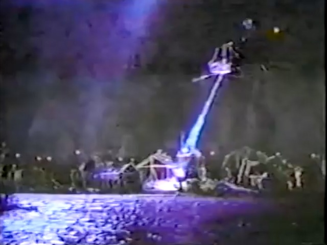
From Raiders of the Lost Ark (1981) until at least Jurassic Park, Spielberg maintained a prolific storyboarding practice: thumbnail sketches which would ultimately be processed by a team of illustrators.
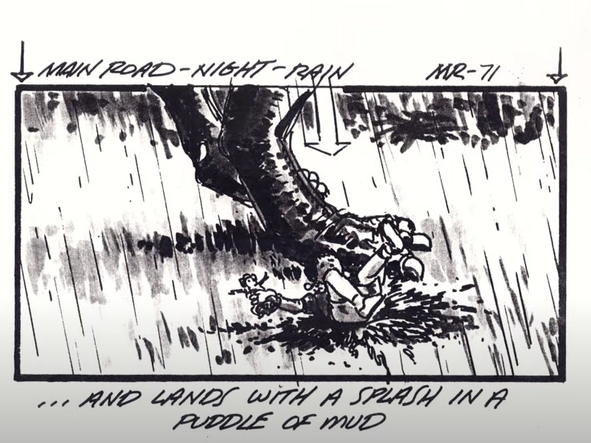
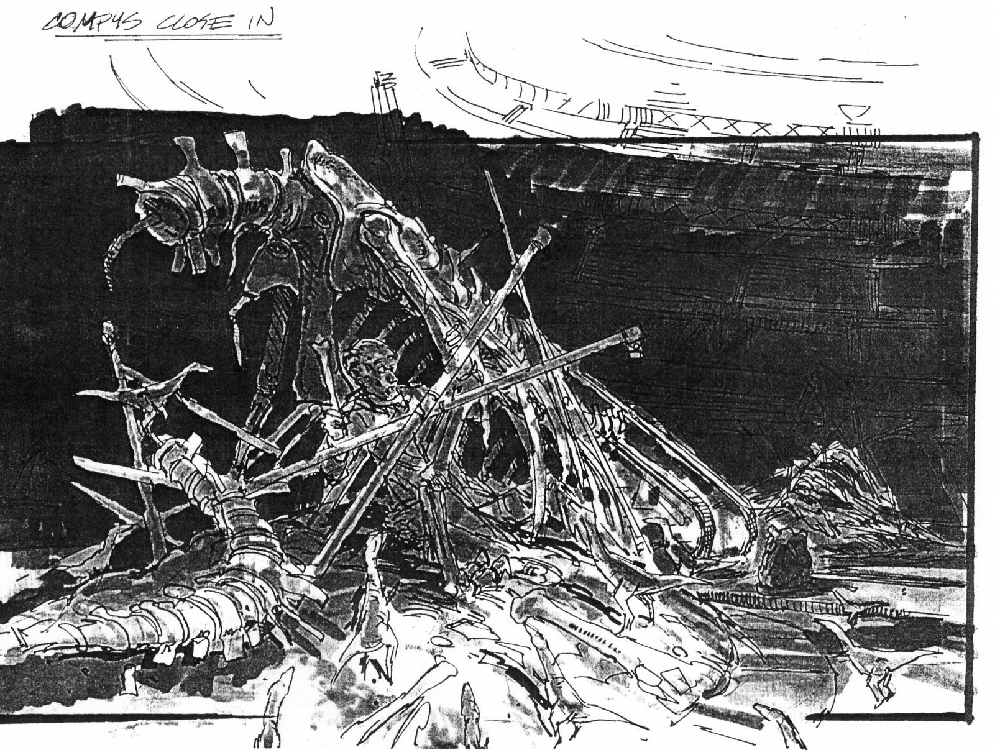
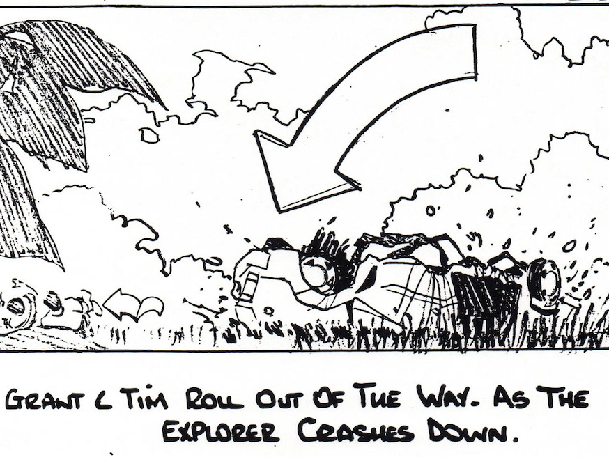
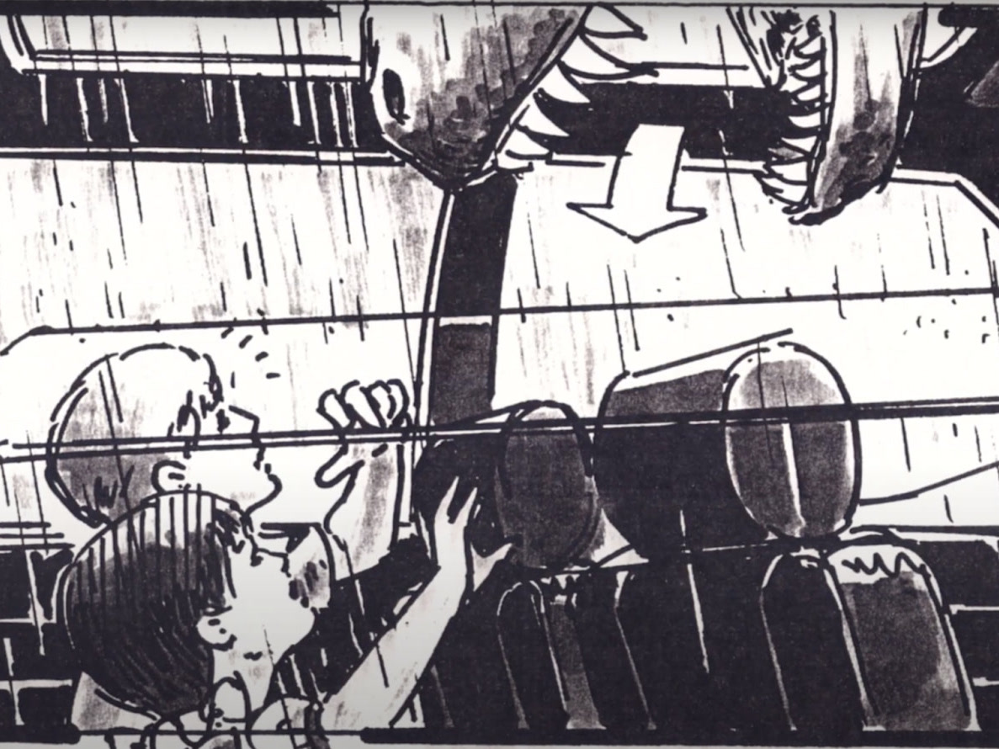
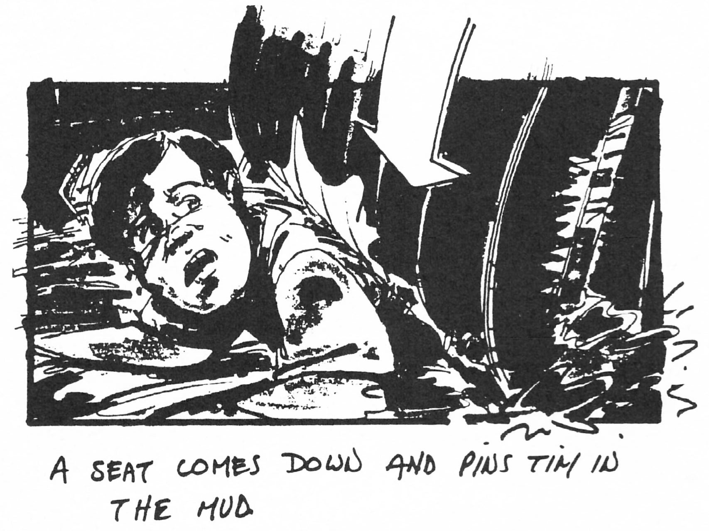
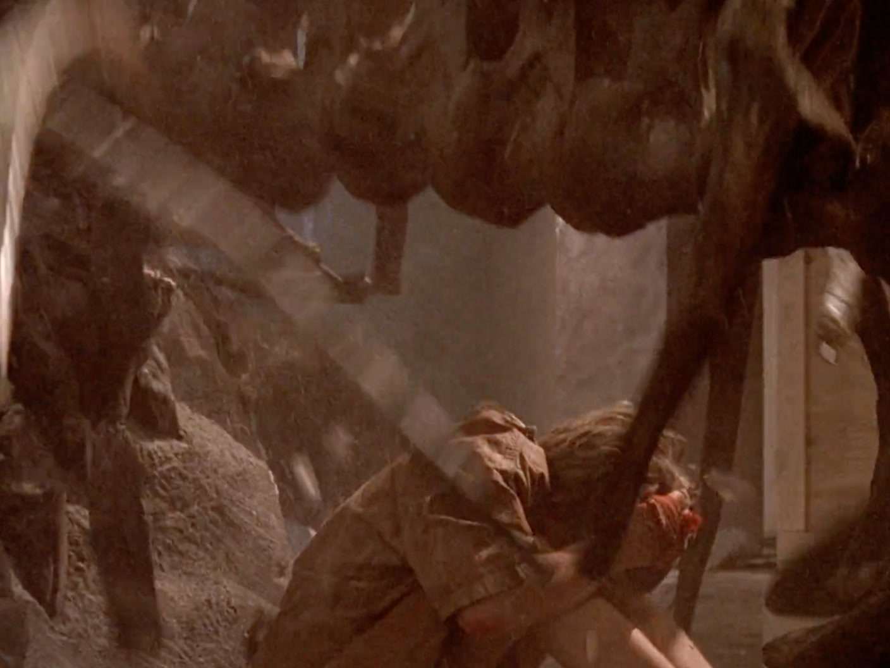
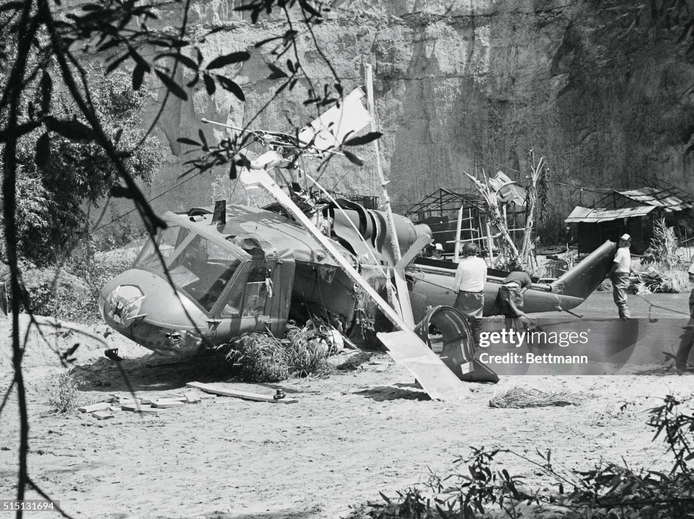
Both Spielberg and Marshall were among those named in a $200-million civil suit filed by the children's families in the early days after the accident. It was settled for $2-million per family during closing arguments, just days before his long pending deposition was scheduled to take place. This number is echoed in early drafts of Jurassic Park, as the amount Hammond and his financiers are being sued for by the family of a worker killed in what was fraudulently represented by Jurassic Park as an industrial accident.
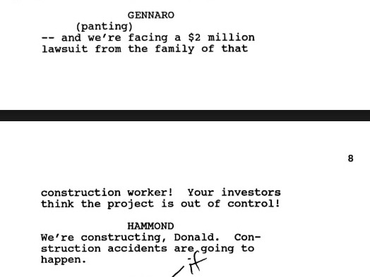
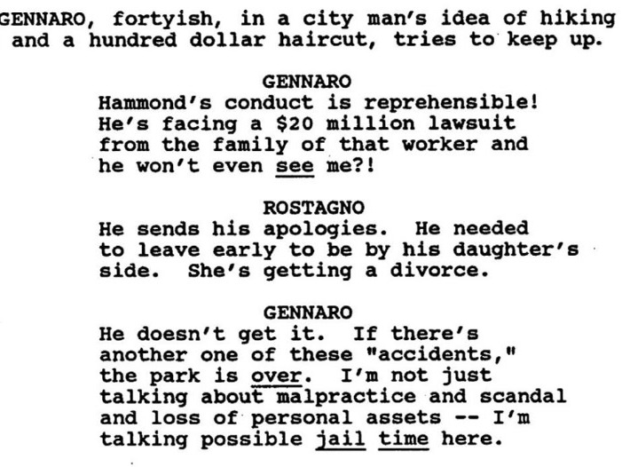
When reporter Sandy Kenyon brought up the accident during a 1985 CNN interview for The Color Purple, Spielberg waved his hands and asked that the camera be turned off (F&G).
Over the years, the Amblin trio have let the films do the talking. Spielberg has told his autobiography in various forms, such as Catch Me If You Can (2002), Spielberg (2017) and The Fabelmans (2022). Most recently, Frank Marshall was a Producer on Jurassic World: Rebirth (2025).
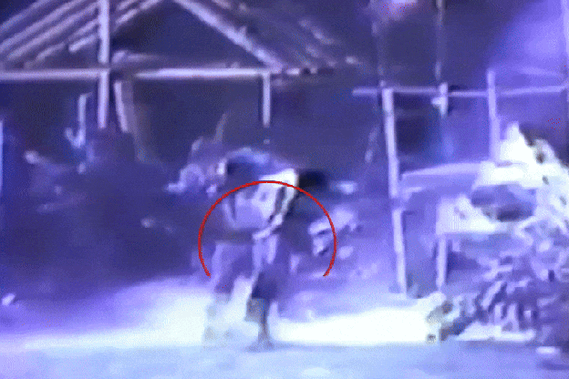
The purpose of this supplementary essay is to explain the significance, or upshot, of my conclusions as to Spielberg's culpability for the illegal hiring of Myca Le and Renee Chen.
I'll begin by recapping the accident and the argument for Spielberg's involvement in its particulars, before turning to what I see as the moral and poetic fallout of that involvement, given Spielberg's titanic status as an American poet.
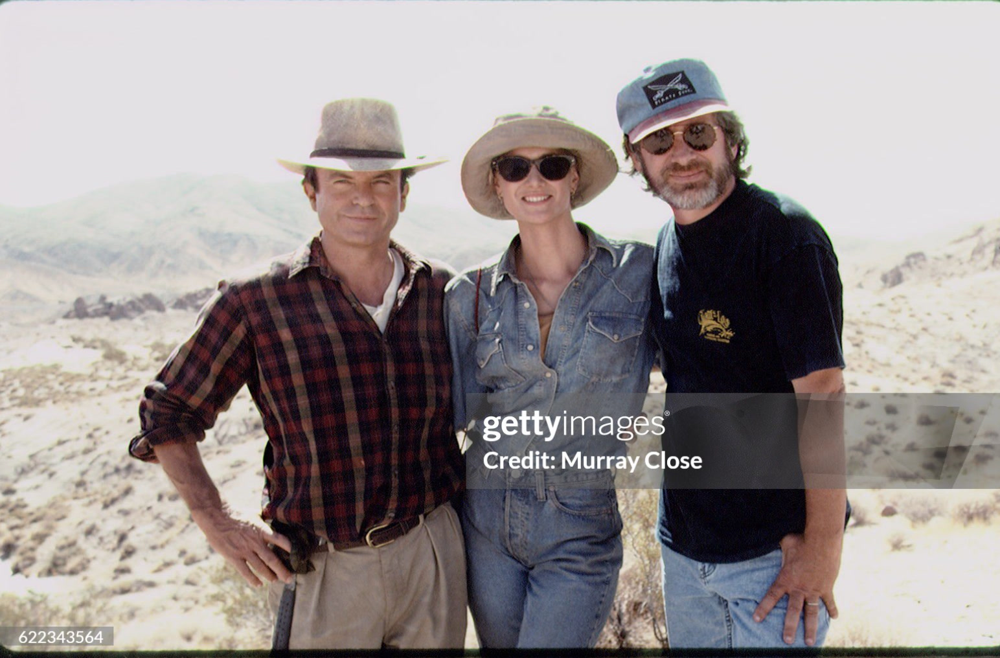
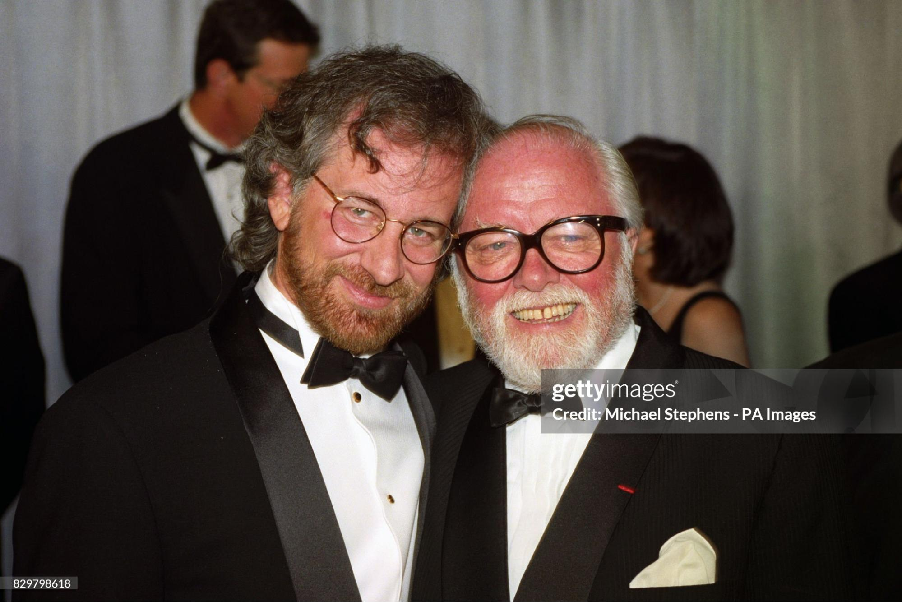
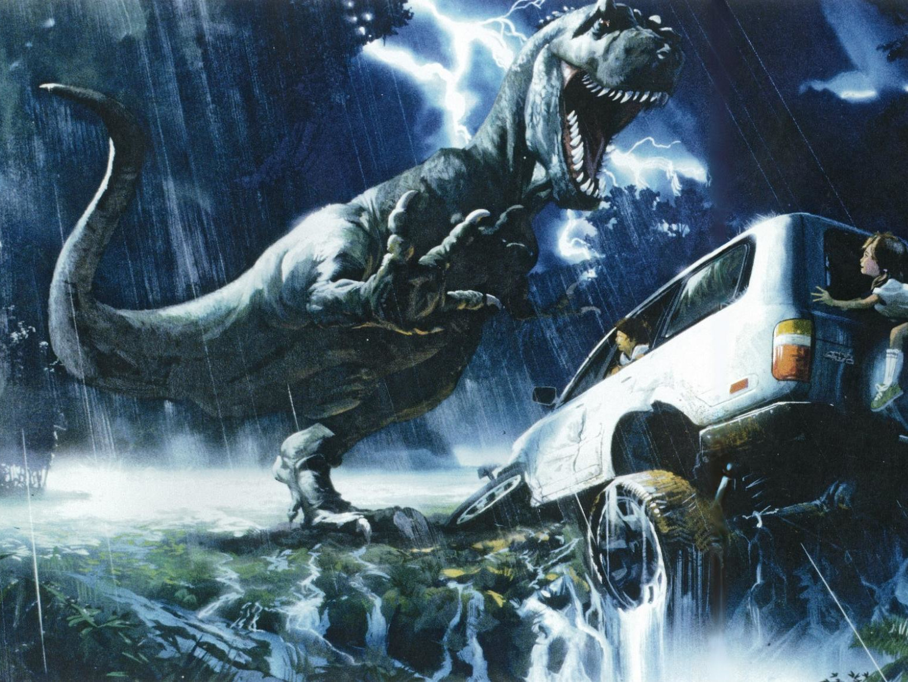
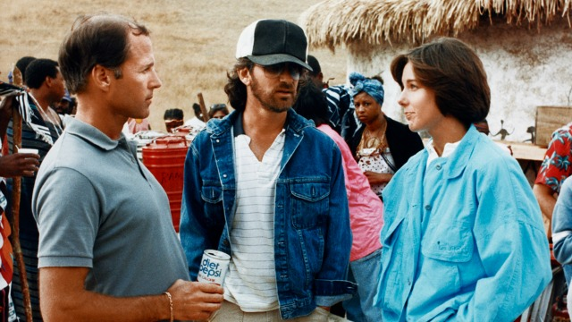
In the end, do our narratives carry any real moral currency? And if so, upon what is that currency based?
The Twilight Zone Accident (July 1982) (tap to expand)
At 2:20am, at Indian Dunes film park, an hour north of Los Angeles, the two children are carried across a manmade lake—Le under one arm, Chen under the other—as the segment's protagonist, played by 53-year-old veteran Hollywood actor Vic Morrow, tries to deliver them to the safety of the opposite shore. But the fourth charge fired, by one of two special effects men, blows through the roof of a fishing hut, damaging the tail rotor of the helicopter, causing it to spiral downwards onto the spot where Morrow had just moments earlier stumbled to his knees. Chen had for a few brief seconds slipped from his grasp; plunged face-first into the murky waters below. Morrow and Le were battered and decapitated by the blades of the helicopter; Chen was crushed to death by its skids and fuselage.
Not in the book, in case you were wondering. Landis told the NTSB in the days after the accident that several "thumbnail sketches" existed for the sequence; but only one was ever turned over to authorities, because its existence had already been independently verified by several sources. It was a top-down diagram of the set known as "the spotting plan" which included an icon of a helicopter already crashed with its tail rotor snapped off. Virtually the same sequence had happened in The Exterminator (1980), also shot at Indian Dunes under Special Effects Supervisor Paul Stewart. Thanks to the diligent work of singular investigators in the NTSB and the Los Angeles DA's office, charges of Involuntary Manslaughter were brought against five members of the film production, headlined by John Landis—the movie's co-producer and writer/director of the segment involving the children.
Landis, along with two subordinates (his Associate Producer and Production Manager), admitted to soliciting the children without permits (a misdemeanour with a maximum $5,500 fine) to allow the production to work the children at night, for the sake of artistic effect, i.e., realism.
The defendants denied that they saw any special danger in this despite the practical effects and pyrotechnics called for by the shot, because safety would be in the hands of trained professionals.
The state challenged this account.
Landis, shadowed by his attorney during a pretrial hearing (1984). After a long and contentious string of legal proceedings including a full criminal trial, the five defendants were finally acquitted in 1987.
What does any of this have to do with Spielberg, who was only 35 years old at the time, and preoccupied with the release and reception of E.T.: The Extra-Terrestrial?
Evidence of Amblin's Involvement (1982) (tap to expand)
Twilight Zone: The Movie
(released in June 1983) was an anthology film co-produced by Landis and Spielberg. It was originally planned (in all likelihood) to be "A Steven Spielberg Production." It featured four different segments by four different directors, of which Landis's—an original, written by Landis, eventually titled simply 'Time Out'—was the first to go to production.Spielberg was among 14 defendants named in the civil case. The suit had been filed in the early days after the accident and cast a wide swath. Not only Spielberg—who directed the film's second segment, "Kick the Can"—but Joe Dante and George Miller, who directed the remaining two segments, were also named, despite plainly having had nothing to do with it. In the wake of the accident, Spielberg distanced himself from Landis, and by most popular tellings acquitted himself admirably of whatever trivial association he had to the tragedy.
The question is: did Spielberg in any way know in advance that Landis intended to hire two children without permits in order to be able to film on location at night in proximity to industrial machinery and pyrotechnics?
And would this not explain Marshall's otherwise bewildering tolerance of Landis's flagrant employment of minors in proximity to obvious illegality and danger?
And Spielberg's continued association with Marshall, and the two other Amblin contractors (Richard Vane and Bonne Radford) also implicated in the illegal hiring, who all received promotions in the years after the verdict?
The 9:30pm shot, the night of the accident (July 22nd, 1982). Executive Producer Frank Marshall was in attendance. Landis and his two "office" co-defendants—who were on the hook for two counts of Involuntary Manslaughter for the illegal hiring alone—maintained that Executive Producer Frank Marshall gave the explicit permission to pursue the hiring.
The defendants said that Marshall said that Kennedy had called the labor board to see whether it would be possible to get waivers allowing the children to work at night legally. This was no small claim: it was a plausible, unchallenged, exonerating narrative (for these counts, for these defendants). These letters resulted in the DA issuing a second, international, subpoena for Marshall, to no avail. Landis would go on to testify (January 1987) that Marshall gave him explicit permission to pursue the illegal hiring.
Years later, in Marshall's only time speaking about the accident on the public record, while promoting his directorial debut, Amblin's, Arachnophobia (1990),
(with "Payroll Services" credited to "DISC Production Management Group") he denied ever having anything of significance to say. D.A. Gilbert Garcetti, however, made clear that the state made "every effort possible to subpoena Frank Marshall but he was able to get out of our hands." Marshall and Kennedy were each stopped on their way into Spain in early 1987 following an Interpol order. But by then their testimony was of no use, as the state had already rested their case.Not much changed in the way of legislation, and Cal/OSHA ended up withdrawing all but $1,350 of the fines. The assemblyman complained about film industry lobbyists who successfully obstructed the effort: "You lose children who shouldn't have been on that set in the first place, and with this administration, it's just as if their lives were worth pennies."
Spielberg has only ever given a few highly-curated public statements on the matter, including a short response to the NTSB, directed at an NTSB request for clarification after a truck driver told investigators that, on the night of the accident, Spielberg was on set and had asked him to procure him a car. At the truck driver's own request, his testimony was taken under oath.
Spielberg replied in a signed affidavit:
"In response to your request, I was never at the Indian Dunes location of Twilight Zone on the night of the accident or at any other time. I declare under penalty of perjury that the foregoing is true and correct, executed at Los Angeles, California, this first day of December, 1982."
The driver later recanted, saying he must have mistaken Marshall for Spielberg.
He was, after all, an unreliable witness; having admitted to ferrying liquor to the special effects team the night of the accident.
He and another technician had hurried back to Warner Bros.' the night of the accident; the SFX truck driver driving the large special effects rig, and another special effects driver following behind him in a pick-up truck. Once they got back to the studio, the truck driver scoured the rig truck for evidence.
A Warner Bros.' Vice President of Production, Ed Morey, who'd become tangled in the hiring's phone-and-paper trail, told a grand jury the following on June 1st, 1983.
DA (GK): Who represented the John Landis production staff at those meetings?
EM: The executive producer frank marshall; the associate producer George Folsey Jr.; the production manager Dan Allingham; I think Bonnie Radford was there. Landis wasn't at those meets. Never met him.
DA: Was it your understanding that Frank Marshall was simply lending his name to this production, but in essence the individuals who were running the show so to speak were John Landis and George Folsey?
EM: Yes, I think Frank Marshall was really representing Steven Spielberg.Landis at the time was mourning the cocaine-heroin overdose of his comedic muse, John Belushi (March 5th, 1982).
If Landis's motives are known to have been creative, then why not Spielberg's?
If the very suggestion would be disregarded prima facie: Amblin Entertainment, at the time, had an alarming and well-documented history of child endangerment, including incidents on Jaws (1975) and E.T. (1982), along with several examples of carelessness and brutality towards marginalized stuntpersons, 1975-1982.
[Figure: Kathleen Kennedy E.T. anecdote 1982]
Amblin Entertainment, established by Spielberg, Kathleen Kennedy, and Frank Marshall in 1981, grew out of Spielberg's earlier production company, Amblin' Productions, Inc., incorporated in 1970 and named after his 1968 short film. It was one of the few works of his, along with 1941 (1979), and The Lost World (1997), which Spielberg would later disavow.
In 1997, Spielberg's biographer (Joseph McBride) discovered that Spielberg had been (literally fraudulently) misrepresenting his age since his early twenties. Whether or not this served his self-image as 'film prodigy,' it also allowed him to escape a contractual obligation with the producer who'd funded the short. After McBride published his findings, the producer sued Spielberg, and was awarded a large cash settlement for his trouble.
The Basis of Hope in Trust
But they [the historian and the poet] differ in this: the one speaks of what has come to be while the other speaks of what sort would come to be. Therefore poiēsis is more philosophic and of more stature than history. For poetry speaks rather of the general things while history speaks of the particular things.Today we often hear the word "narrative"—as in, "controlling the narrative"—the narrative being a kind of story.
But what exactly is a "story"? Why do "narratives" hold such power for us? And what are the limits of this 'power'?
The dominant paradigm of storytelling in the West is Joseph Campbell's "The Hero's Journey." According to Campbell, the essential parameters of storytelling can be derived by way of cross-cultural analysis. In short, a hero-protagonist leaves their village, slays the dragon, and returns home changed and triumphant. It's by being formatted in this way that stories 'work': by modelling for spectators the attitude needed to overcome their own personal dragons, whatever they may be. By Campbell's account, storytelling's underlying virtue is its pro-social orientation: it is fixedly constructive or optimistic.
But for Aristotle, who in c. 335 BCE wrote his Poetics—the earliest Western treatise on storytelling, and one of the most read, studied, and commented-upon texts in the Western canon—Campbell's method does not adequately account for the effects of story in their sharpest expressions.
Story then is the first principle and like the soul of tragedy.For Aristotle, a story (μῦθος) is that which organizes the incidents of tragedy specifically—the dramatic form developed in ancient Athens, which peaked over a century before Aristotle started writing about it.
Who wrote when, relative to the Poetics (BCE). Brown: epic; dark grey: tragedy; light grey: comedy. 750 … 500 450 400 350 300 Homeric epic c. 750–700 Aeschylus 499–456 Sophocles 468–406 Euripides 455–406 Aristophanes 427–388 Contemporary tragedians c. 380–330 Poetics c. 335–323 New Comedy c. 321–260
Since the paradigmatic story only emerges as a late historical development, Campbell's strategy of establishing the form by way of cultural aggregate won't do. For Aristotle, any science of storytelling has to convincingly explain how a tragedy makes a spectator, or even most spectators, collapse into tears, overcome with awe or wonder, and then feel somehow "cleansed," followed by a feeling of well-wishing for other human-beings, regardless of class or creed (the φιλάνθρωπον).
Tragedy then gradually evolved as men developed each element that came to light, and after going through many changes, it stopped when it had found its own natural form.To say, however, that for Aristotle, the paradigmatic story is "tragic," is not to say that stories which end in suffering are preferred, primary, or "best." It's not that the best stories are tragic; it's that the tragic form best illustrates how stories work for human beings. Aristotle shows great deference to comedy, which he argues "came to light side by side" with tragedy (1449a). Besides that, even within the form of tragedy, some tragedies have happy endings; Aristotle repeatedly sets Sophocles' Oedipus Tyrannus (429 BCE)—a tragedy in the typical sense—against Euripides' Iphigenia at Tauris (414 BCE), in which the protagonists recognize each other in time to avert the fatal mistake.
All of this is to say that what is at stake (in Campbell vs Aristotle) is not a favoured valence or framing of events. Aristotle emphasizes that effective story depends on τὸ πεπλεγμένον [complexity]: the successful execution of moments of "reversal" (περιπέτεια) and "recognition" (ἀναγνώρισις). These are the critical twists which suddenly put the spectator into a position of feeling empathy for those for whom this reaction would normally be blocked—such as for those who are culpable for the suffering they have wrought.
The upshot of Aristotle's emphasis on dynamics over sequence is the ability to account for ethical dimensions of story entirely transparent to Campbell's analysis.
Namely, what happens when the storyteller’s known biography contradicts the explicit or implicit moral premises operative in the story?
Obviously, viewed as a political object, there are many contemporary examples showing the odious ‘aura’-shift that takes place when its producer is known to be of dubious character; e.g. John Landis films in the wake of the accident. However, the story also collapses from the inside as it were; with the tragic mechanism ceasing to function as a genuine means of catharsis due to spectator interference.
I treat this oversight—the belief that “narratives” are infinitely flexible—as endemic to the American film industry, and the American ‘imaginary’ more generally; the $200-million Warner Bros.'; Spielberg et al. (9 in total, a scattershot selection) civil case (loged in 1982; settled in 1987, for $2-Million/family.) taken up by IJPAUC? (2025) models the qualities of complicity within a corporate structure by an insulated, freely creative individual; and the subsequent attempt to “narrativize” their actions out of existence.
3a. On Aristotle's Poetics & Rhetoric (tap to collapse)
Aristotle's claim hinges on what he calls the ἴδιον (defining quality) of tragedy: its capacity, "through pity and fear," to induce κάθαρσις (catharsis) of these same feelings. (What is meant precisely by "catharsis" in this context is a matter of controversy, to be discussed below.)
What, Aristotle asked, is the real root of that effect in human experience?
Spectator reactions to tragedy were sharp and conspicuous. "Pity (ἔλεος) and fear (φόβος)" had already been theorized at the time to be germane to both tragedy and rhetoric.
Epigram + Plato, Ion (535c) (tap to collapse)
outἐγὼ γὰρ ὅταν ἐλεεινόν τι λέγω, δακρύων ἐμπίμπλανταί μου οἱ ὀφθαλμοί· ὅταν τε φοβερὸν ἢ δεινόν, ὀρθαὶ αἱ τρίχες ἵστανται ὑπὸ φόβου καὶ ἡ καρδία πηδᾷ."For I will tell you without reserve: when I relate a tale of woe, my eyes are filled with tears; and when it is of fear or awe, my hair stands on end with terror, and my heart leaps." Plato, Ion 535c, trans. LambThe problem becomes salient once one appreciates that "pity and fear" are almost opposites, and from many angles drive each other out. Aristotle defines the two terms in the Rhetoric. Fear concerns our anticipation of our own potential suffering. Pity concerns our anticipation of the potential suffering of others who are like us—so long as they don't deserve it.
(Rhet 2.5; 2.7; Poetics 13.) It is very difficult to pity someone that you fear at the same time as you are fearing them. It's this intersubjective asymmetry—the lack of a "doesn't deserve it" clause on fear, in contrast to pity—which tragedy exploits.Although Aristotle establishes a provisional definition of tragedy in Ch. 6, this mainly ties together tragedy's place within the broader art of poetry. He unpacks its mechanisms progressively, by way of argument, through the text. Through this process, he splays out the particulars of the effect, and leaves the reader to infer the “how.”*
*Note on pervasiveness of Jaeger’s thesis that Aristotle’s works are primarily lecture notes; in some passages (e.g. Rhetoric 3.12), the fact that Aristotle may be conceiving himself as writing to a reader are of plain significance.
Epigram + On Rhetoric III.12 (tap to collapse)
“What is suited to a written speech is not the same as what suits debate, and the same wording is not suited to both a public assembly and a lawcourt. And it is necessary to have knowledge of both, since one involves knowing how to speak grammatically, the other how to avoid being forced to keep silent when one wants to put one’s opinions out to others, which happens to people who have no skill at writing.”Epigram + Poetics, Ch. 6 (tap to collapse)
Tragedy, then, is an imitation of an action that is of stature and complete, with magnitude, that, by means of sweetened speech, but with each of its kinds separate in its proper parts, is of people acting and not through report, and accomplishes through pity and fear the cleansing of experiences of this sort. I mean by "sweetened speech" that which has rhythm, harmony, and song, and by "separate in its kinds" sometimes through meters alone accomplishing its task and again at other times through song.Ch. 9: Wonder (θαυμαστόν) and Beauty (καλόν) (tap to collapse)
...the imitation is not only of a complete action but of fearful and pitiable things, and these come to be both especially or more whenever on account of one another they come to be contrary to expectation. For if this is the case, it will be more wondrous (θαυμαστὸν) than if they come to be spontaneously or by chance, since even among chance things those seem most wondrous (θαυμασιώτατα) which appear to have come to be as if for a purpose. For example, the statue of Mitys at Argos killed the one who was the cause of the death of Mitys; it fell on him while he contemplated it. For it is likely that as things of this sort do not come to be at random, so stories of this sort are of necessity more beautiful (καλλίους).In this passage, Aristotle provides what looks like a tragic plot in miniature: "the statue of Mitys at Argos killed the one who was the cause of the death of Mitys; it fell on him while he contemplated it." The point is to suggest how pity and fear might be produced together “whenever on account of one another they come to be contrary to expectation.”
The strangeness of this construction warrants articulation. Pity caused by fear; and fear caused by pity. They should come to be, not randomly; but contrary to expectation.
Not because it can't happen randomly, but because this uncanny simultaneity is more wondrous to the extent that it "appear[s] to have come to be as if for a purpose."
What is the significance of Aristotle’s emphasis on apparent teleology? What or whose "purpose" does he mean?
Ch. 11: Reversal (περιπέτεια), Recognition (ἀναγνώρισις), Suffering (πάθος) (tap to collapse)
Reversal and recognition, says Aristotle, besides the story (the poet's sequencing of events), "are the greatest things by which tragedy 'guides the soul' (ψυχαγωγεῖ) and specifically characterize a "complex" story against a "simple" one.
Aristotle gives as an example of reversal from Sophocles' Oedipus:
What has been spoken of as the change into the contrary of the things being done is reversal (περιπέτεια), and this too, just as we say, according to the likely or necessary. For example in the Oedipus, on his coming [the messenger from Corinth], in supposing that he was going to cheer Oedipus and release him from the fear regarding his mother, once he had made it clear who he was, he did the contrary.And an explanation of recognition, also from the Oedipus:
Recognition (ἀναγνώρισις), on the other hand, just as the name too signifies, is a change from ignorance to knowledge, whether toward friendship or enmity, of those whose relation to good or ill fortune has already been determined. A recognition (ἀναγνώρισις) is most beautiful when it comes to be at the same time as a reversal (περιπετείᾳ), for example as it is in the Oedipus.Reversal is "the change (μεταβολή) into the contrary (ἐναντίον) of the things being done"; e.g., to unveil the source of the plague (as in Oedipus). Until this point in the play, everything has been about discovering that source; now it's going in a whole other direction.
The definition of recognition is more technical: "a change from ignorance to knowledge whether toward friendship or enmity, of those whose relation to good or ill fortune has already been determined." The distinction might seem academic because in the case of Oedipus—but not necessarily all tragedies, as Aristotle points out—they occur at the same time.
When knowledge of the reversal is the recognition, it means the mistake has already happened. This means that all there is left to do is suffer, which Aristotle tags as a third part of the story; its implied terminal state.
These, then, are two parts of the story, reversal (περιπέτεια) and recognition (ἀναγνώρισις), and a third is suffering (πάθος). Of these, reversal (περιπέτεια) and recognition (ἀναγνώρισις) have been spoken of, but suffering (πάθος) is a destructive or painful action such as killings in the open, and the infliction of excessive pains and wounds and everything of this sort.The suffering always looms in the background. When reversal and recognition come to be simultaneously; i.e., information delivered to the protagonist, which changes the scenario, when it's already too late to do anything about it but suffer.
But knowledge of the reversal might happen with half of the recognition still pending, with a range of dramatic outcomes still viable, some in good fortune, some in bad.
At this point, Aristotle raises a key counter-example to Sophocles' Oedipus: Euripides' Iphigenia at Tauris. Iphigenia at Tauris belonged to a class of escape-tragedies pioneered by Euripides, ending in good fortune. Aristotle conveniently provides a plot summary in Ch. 17.
A girl is sacrificed, disappears in a way that is not clear to those who sacrificed her, gets settled in another country in which it was the law to sacrifice strangers to the goddess, and she gets this priesthood. Later in time it happens that the brother of the priestess came, but that the god declared that he should go there for some cause is outside the general and for what purpose he was to go there is outside the story. But on his arrival he was caught, and being about to be sacrificed, he made himself recognized (whether in Euripides' way or as Polyidos made it up in saying according to the likely that it was as it should be that not only his sister be sacrificed but also he himself, and from the recognition he was saved). It is after this that the poet must insert the names and make up the episodes, and he must make sure that the episodes are appropriate, for example in the case of Orestes, the madness through which he was caught and his being saved through the καθάρσιον [purification rite].Epigram + Davis (1992) (tap to collapse)
"Without the specific language in which Aristotle discusses the Iphigenia, there would be no reason to connect his summary of it with his account of tragedy. Once we notice this language, however, we wonder whether it is not Aristotle's interpretation of the play that Orestes is meant to be the poet in his role as standing apart from his own passions. Orestes is the spectator "purified" by the action of the play. This confirms Aristotle's earlier suggestion in chapter fourteen that the Iphigenia among the Taurians is an attempt to present the action characteristic of the best man—the epiekes—by bringing the spectator onto the stage. All of this would be invisible were we to pay no attention to the specific language of Aristotle's account."Ergo, vis-à-vis the argument Aristotle is making, whether the paradigmatic tragedy ends in good or bad fortune is an open question—not foreclosed for bad fortune as one might presume. Tragedies could certainly have happy endings and still be effective, as Aristotle will explain in Chapter 14 in an apparent reversal of his own.
In the example in Ch. 11: Iphigenia reads aloud a letter that reveals her identity to the two men standing in front of her. One of the men is her beleaguered, long-lost brother, Orestes, who now recognizes her for who she is. But she has not yet recognized him; and he can't say it out loud, because they're surrounded by hostile Taurians. In the play, the subsequent recognitions occur, and all three characters devise to get away safely.
Aristotle writes that "a recognition is most beautiful when it comes to be at the same time as a reversal, for example as it is in the Oedipus."
But why? Why not as it is in the Iphigenia?
Ch. 13: Mistake (ἁμαρτία), Decency (ἐπιείκεια), Disgusting (μιαρόν), Humanistic Sentiment (φιλάνθρωπον) (tap to collapse)
Since recognition and reversal concern mistakes, and mistakes are made by people acting, the mistake that induces the moments of recognition and reversal depends on someone making it. But not just any character and any reversal of fortune will produce the tragic effect.
In considering the reasons why, as though generating elemental sparks by way of particle acceleration and collision: we gain a new handful of terms — decency (ἐπιείκεια), wickedness (μοχθηρία), the disgusting (μιαρόν), the friend-feeling for fellow human-beings (φιλάνθρωπον) — applicable to the ongoing delineation of the paradigmatic story with its dependence on the generation of "pity and fear."
The Unexpected Downfall of the Decent Man (ἐπιεικής) (tap to collapse)
...ἐπιεικεῖς ἄνδρας ought not to be shown changing from good to bad fortune (for this is neither fearful nor pitiable but μιαρόν)...Aristotle says that the arc in which the "decent" man comes to ruin would be experienced by spectators as μιαρόν (disgusting).
Aren't terrible things happening to decent men the epitome of tragedy? No; Aristotle claims that such a plot wouldn't produce fear or pity.
But why this limit, exactly? The ἐπιεικής?
The term ἐπιεικής is frequently used in the later sections of the Nicomachean Ethics to refer to the man who models virtue. In Book V, Aristotle defines τὸ ἐπιεικές [what is decent] in contrast to the legally just:
…while what is decent is just, it is not so according to the law, but is a setting straight of what is legally just.Surprisingly, through the rest of the book, the ἐπιεικής becomes the new standard of virtue, rather than the law-abiding man as such. This is fairly straightforward when you think about it, and represents the wide field of ordinary human experience and dealings; we define a 'good' person, generally speaking, not according to their following the letter of the law, but by operating within the broad field of its obvious spirit.
Throughout each of Aristotle's excluded plots, a repeated problem is spectator identification. Aristotle introduced the spectator as a term of concern to the analysis of tragedy at 1449a6–9: "...in order to judge [tragedy] both by itself in relation to itself and in relation to the spectators."
The spectator must be able to fear for the relevant characters in order for the tragic effect to take place.
The Unexpected Success of the Wicked Man (tap to collapse)
...so the μοχθηρός ought not to be shown changing from misfortune to good fortune (for this is the least tragic of all, since it has nothing of what it ought to have as it is neither productive of philanthropic feelings (φιλάνθρωπον) nor pitiable nor fearful)...No one identifies with being wicked, evil, or vicious in the first place.
This is another striking psychological claim of the Nicomachean Ethics.
…And the kinds to which lack of restraint (akrasia) and vice (κακία, kakia) belong are completely different, since vice is something one is not aware of having, while unrestraint is something one is aware of.The vicious stand by their bad decisions; it never seriously occurs to them to question their behaviour.
The unrestrained (akratic) person, by comparison, does regret. They admit what they did to themselves, so that they can atone with that person. But vice is "something one is not aware of having."
Stated differently: for Aristotle, as a conclusion, no one imagines themselves to be vicious, even if they are. They may imagine themselves as virtuous or akratic (more typical if some evidence is indisputable), but not vicious per se.
The mention of vice at the end of the chapter (1453a9) invites the distinctions of the Ethics.
Aristotle writes that, because the vicious can't trust themselves to act in their own best interests (to be friends to themselves), they don't seem fully decent even to themselves (1166b).
The corollary is that the vicious, insofar as they recognize their own failings at all, sees them for lapses of restraint, rather than defects of character. They focus on the extenuating circumstances, such as their accidents of upbringing or the generally "wicked" (poneria) nature of human beings altogether.
Epigram + EN VII.14 (tap to collapse)
This is why God always enjoys a single and simple pleasure; for there is not only an activity of movement but an activity of immobility, and pleasure is found more in rest than in movement. But 'change in all things is sweet', as the poet says, because of some vice (πονηρίαν); for as it is the vicious man (ὁ πονηρός) that is changeable, so the nature that needs change is vicious; for it is not simple nor good (ἐπιεικής).The name self-indulgence is applied also to childish faults (παιδικὰς ἁμαρτίας); for they bear a certain resemblance to what we have been considering. Which is called after which, makes no difference to our present purpose; plainly, however, the later is called after the earlier. The transference of the name seems not a bad one; for that which desires what is base and which develops quickly ought to be kept in a chastened condition, and these characteristics belong above all to appetite and to the child, since children in fact live at the beck and call of appetite, and it is in them that the desire for what is pleasant is strongest.So what does it mean to be unrestrained; in general and/or in respect to any given branch of human excellence (the virtues)?
To be unrestrained means acting against one's own perceived best interests in order to satisfy a more immediate desire; which sometimes involves an active act of self-deception. This is the paradigmatic case of mistake-making in the specific, culpable sense
(again, later translated as "sin") .One may consider the case of drunk driving. The driver doesn't intend the fatal accident; but even so, because it happened because of his being compromised by his earlier lapse (deciding to drive; and before that, deciding to drink). When one lapses in a general sense, they do not become inebriated, but they do in effect deviate from the version of themselves which was the most fit and capable. As with someone becoming drunk, they lose the capacity to tell when they're being unreasonably reckless; that is, acting as someone vicious would act, even if unintentionally so.
As one lapses into bad habits, the points of choice or agency at which they would normally become alarmed with themselves or suspicious, begin to atrophy as points of notice altogether.
All of this produces fairly distinguishable dimensions of human culpability. While any reasonable listener could feel pity for anyone whose decision-making skills were impaired because of upbringing or even human nature in general, with its ups and downs for different sorts of people of all walks of life.
(Aristotle believed human-beings shared friendship with all of their species, Greeks and barbarians alike. Universal "love," as a concept—if not a cultural aspiration—is not the exclusive province of Christianity.) What remains is the field of human choice and agency; this is the dimension in which we assign culpability, or blame, as warranted. Far from the 'abstract realms of the philosophers,' this represents the reasonable way we would be disgusted at actions which are several standard deviations more careless than that which we would expect from those in their position.
But even when the vicious man gets away with it and prospers, we're not disgusted, as we would be to see the ἐπιεικής come to bad fortune by way of a reversal.
The Unexpected Downfall of the Wicked Man (tap to collapse)
...any more than the σφόδρα πονηρός ought to appear to fall from good fortune to ill fortune (for, though a putting together of this sort would have the feeling of kinship with the human, still it would not have either pity or fear; for with respect to one who has ill fortune, the pity concerns his not deserving it, and the fear concerns his being similar to us, so then what occurs will be neither pitiable nor fearful).Aristotle notes that in this case—watching an evil man be brought low—would produce the φιλάνθρωπον [love of mankind] but without the activation of the pity/fear mechanism. Again, no one self-identifies as vicious or wicked per se.
But the point is that even in a story like this, when there's a "change into the contrary of things being done," the gratification is different; what's generated for the spectator is something more like shared philanthropic sentiment, rather than the personal, cathartic tragic effect Aristotle has been targeting. This rules out justified comeuppance as its mechanism.
None of these three superficially 'tragic' plots produce the relevant effect: "decent" (ἐπιεικής) guy loses; "wicked" (μοχθηρός) guy wins; "very evil" (πονηρός) guy loses.
With almost optical precision, Aristotle is delimiting the psychic field at issue: actions for which we'd forgive ourselves or our friends, but for which we'd hesitate to forgive others.
The protagonist:
…is neither distinguished by virtue and justice nor changing to bad fortune on account of vice and wickedness, but one who changes on account of some mistake (ἁμαρτίαν τινά), and is one of those in great repute and of good fortune, such as Oedipus, Thyestes, and notable men of families of this sort.It's only at this point that Aristotle concludes the change of fortune must come by way of a ἁμαρτία (mistake) and not vice as such.
It is necessary, then, for the beautiful story to be simple rather than, as some say, double, and to change not to good fortune from bad fortune but the opposite, from good fortune to bad fortune, not because of wickedness but because of a great mistake (ἁμαρτίαν μεγάλην)...This confirms Sophocles' Oedipus as a paradigmatic tragedy and Oedipus a paradigmatic tragic hero. Aristotle also mentions Thyestes, Orestes' grandfather, who was made to eat his own children in a soup, and other "notable men of families of this sort."
(Whereas comedy concerned the common man, and common troubles, tragedies were about men with means, education, and a reputation to protect.) In Chapter 14, however, Aristotle will reverse himself, by recognizing the strongest form of recognition as that in which the characters are saved by taking care to avoid the mistake before it happens.
Ch. 14—Recognition of What Could Have Been (tap to collapse)
In Chapter 14, Aristotle concerns himself with the most beautiful kind of recognition.
What more, however, is there to say?
In Chapter 13—just previously—Aristotle reasoned that the tragic protagonist is “one who changes on account of some mistake and is one of those in great repute and of good fortune such as Oedipus, Thyestes, and notable men of families of this sort. … It is necessary, then, for the beautiful story… to change… from good fortune to bad fortune, not because of wickedness but because of a great mistake…”
Aristotle goes as far as to diagnose the cause of poets’ tendency toward happy endings as pandering to the spectators' wishes for things to end "as they would pray for things to be."
For the poets follow the spectators, making their poetry as they would pray for things to be. But this is not a pleasure of tragedy but is rather proper to comedy, where those who are the greatest of enemies in the story, for example, Orestes and Aegisthus, having become friends, go off at the end, and no one is killed by anyone.The dimension of analysis introduced in Ch. 14 stems from Aristotle’s premise in Ch. 11 that recognition is always recognition of some person; and specifically with regards to their "friendship or enmity."
It is surely necessary that actions of this sort be in the relation of friends toward one another, or of enemies, or of neither. Should it be enemy toward enemy, he is neither doing nor intending anything piteous except by virtue of the suffering itself, any more than if they are neither friends nor enemies. But the sufferings to be sought are these: whether they come to be in friendships, such as if brother should either kill or intend to kill or do something else of this sort to brother, or son to father, or mother to son, or son to mother.This distinction appears to reveal a dramatic possibility hitherto overlooked, vindicating the happy outcome.
This is insofar as the tragic effect—the uncanny co-production of pity and fear in the spectator—not only depends on a suitable protagonist making a mistake, but is influenced by the particular relationship between the characters: namely, not enemy-against-enemy (which is to be expected), but friend-against-friend (i.e., a friend mistaken for an enemy). Or even more purely, family-against-family. These relations are strong enough to allow Aristotle to demonstrate that the fatal act does not even need to occur for its resonances to be felt by the audience.
Aristotle begins by re-iterating the hierarchy of story arcs as it stood in Ch. 13. Namely, the complex tragedy (with a recognition and reversal) trumps the simple one. The tragic action against her friends can be done knowingly (like in Medea, when she plots to, and does, kill her children) or unknowingly (like in Oedipus). Of the two, again, Aristotle favours the latter; which is a complex plot, allowing for an “astounding” (ἐκπληκτικόν) recognition.
But he also floats a third possibility: “to intend to do something beyond cure because of ignorance but to recognize before doing it”—like in Euripides’ Iphigenia.
- Euripides' Medea ("knowingly and with cognizance")
- Sophocles' Oedipus ("to act, and, being ignorant, to do what is terrible and then afterward to recognize the friendship")
- Euripides' Iphigenia ("to intend to do something beyond cure because of ignorance but to recognize before doing it.")
In his subsequent ranking of this list, these three possibilities turn into four.
- (Worst) In Antigone, Haemon toward Creon ("to intend while cognizant and not to act")
- Euripides' Medea ("to act")
- Sophocles' Oedipus ("the ignorant to act and, having acted, to recognize")
- (κράτιστον) Euripides' Iphigenia
Even worse than the Medea structure would be a variant in which the murderous action is intended but never happens. Aristotle suggests this possibility despite it being so rare that he can only refer not to a whole tragedy, but to “Haemon toward Creon” in Sophocles’ Antigone.
This would be μιαρόν (disgusting) to see because without a moment of recognition, the tragic effect never takes place; it would simply be the depiction of a foul act. It's possible that Aristotle found the Antigone to be in poor taste in some ways.
To intend while cognizant and not to act is worst, for it is μιαρόν and not tragic, since it is without suffering.By the same token, however—and Aristotle makes this an important point—this means that a variant of the Oedipus, in which the unintended action never comes to pass prior to the recognition, would be better or "stronger" (κράτιστον) than the Oedipus. And the Iphigenia, with its happy, or even wish-fulfilled ending, is exactly this.
While the Medea-variant ("Haemon toward Creon") suffers from the audience’s successful imagining of the deed, which makes this form disgusting (μιαρόν)—the same word Aristotle used for the tragedy of the ἐπιεικής—the Oedipus-variant benefits from it, anticipating the potential suffering enough for the tragic effect to work, but with the story still ending as the spectators "would pray for things to be."
The uncanny upshot of this conclusion is that apparently the paradigmatic story isn’t Sophocles’ Oedipus, but Euripides’ Iphigenia, as a positive variant of the former, using its same engine.
Or—does Aristotle mean by κράτιστον a separate metric than καλλίους, for the best form of recognition?
The Tragic Effect—Catharsis (κάθαρσις) (tap to collapse)
Although Aristotle doesn't put quite so fine a point on it in the Poetics, the mechanisms of the tragic effect can by now be inferred.
In Ch. 13, Aristotle provided the principle of identification: "with respect to one who has ill fortune, the pity concerns his not deserving it, and the fear concerns his being similar to us."
(Ch. 13, 1453a2–6; Benardete/Davis.) This puts "pity and fear" into the intersubjective terms of friendship elaborated in books VIII and IX of the Nicomachean Ethics.
The spectator begins by regarding the actors as they would a favoured athlete. They feel good-will towards them.
Epigram + EN IX.5 (tap to collapse)
"…And good will is not loving either, since there is no intensity or desire in it, but these things go along with loving; and loving involves intimate acquaintance, while good will is also of sudden origin, as happens in connection with those engaged in athletic competition, since people would become good-willed toward them and share their wishes, but would not share their action in any way, for as we said, they become good-willed suddenly and like them superficially…"As the plot unspools, the spectators learn more about the character, their choices, and the circumstances.
Epigram + Poetics, Ch. 4 (tap to collapse)
…We take pleasure in contemplating the most precisely made images of things which in themselves we see with pain, for example, the visible shapes of both the least estimable of beasts and corpses. And the cause of this is that not only is learning most pleasant for philosophers, but also for everyone else alike, although they share in it to a small extent. They are pleased in seeing images because in their contemplating there is a coincidence of learning and figuring out what each thing is, for example "That's him!"Somewhat paradoxically, the more we learn about the particulars of the protagonist's situation—the more specific they become—the more we identify with them.
The catalyst of the change is a mistake.
Whose mistake?
Hamartia (Ancient Greek: ἁμαρτία) originally means "missing the mark." With Christianity, ἁμαρτία becomes morally charged as "sin." But already in the Greek sense, ἁμαρτία carries the potential for culpability with serious consequences.
Mistakes (hamartēmata) in Aristotle are given a definite, proto-legal structure in the Ethics, V.8.
(EN V.8, 1135b11–19.) A mistake in the general sense is a "missing of the mark." But this breaks into two specific senses: accidents (ἀτύχημα [accident]) properly, and mistakes of neglect (ἁμάρτημα [missing-of-the-marks], in the specific sense). The distinction is whether the harm resulted contrary to what might reasonably have been supposed (1135b10-25).
In an evaluation of the causes of the accident—say for matters of determining culpability, if any—it might come to light that, although the accident itself was unintended, its conditions were reasonably foreseeable and yet were disregarded by the culpable party at some earlier time. The plainest example is drunkenness prior to the operation of a serious task, like driving. But a mistake can be negligent even as a product of ordinary behavioural laxity over time.
This is all to say that Aristotle's use of hamartia in the Poetics is ambivalent with regard to the culpability of the tragic agent for that mistake.
If the reversal reveals that the agent had greater culpability for his mistake (whatever it is) than was previously appreciated by the spectator, this would act as a catalyst, explaining the tragic cascade.
The spectator already feels fear for the protagonist insofar as he is similar to them, and pity insofar as he doesn't deserve the suffering bearing down on him—but this experience is disrupted by the recognition that the protagonist is—in some newly revealed way—culpable for what's happening.
The spectator should no longer be able to pity the agent—and yet they do.
It is the activation of precisely this psychological limit, by way of precisely this dramatic lever, which makes the effect work.
The spectator still feels pity, despite the agent deserving whatever is upon them.
The persistence of this pity—owing to our identification with the protagonist—manifests as forgiveness, and "philanthropia"—translated as something like "well-wishing for the common good of humanity."
And this is catharsis. (If Davis's apt point about Aristotle's commentary on Euripides' Iphigenia is decisive, then controversies about hamartia and katharsis are minor issues.)
The mistake must be culpable in order for the reversal to produce sufficient resistance for the tragic effect to occur at all; the critical confusion results because the mistake can simultaneously entail the involuntary fields of upbringing, human nature, etc. This doesn't override the field for which the protagonist is culpable; the field of human action. Catharsis results from the persistence of pity the spectator feels for the protagonist. This sets off a cognitive and emotional cascade.
First, the spectator accepts that some principle keeps lapsed men from being beneath pity (which by Aristotle's account requires that whomever to be pitied does not deserve their suffering), he feels relief in this.
Second, at the same time he shares in the grief of what has been done and cannot be undone, as a consequence of their immediate recklessness or "characteristics" bad habits as a consequence of actions chosen, and/or performed, time and time again.
That Aristotle means by catharsis something like a 'parasympathetic' phase, regulating the universal human tendency toward 'melancholia' (in its various forms), an ancient term meaning literally black bile is no mere conjecture. Aristotle makes this point almost unmistakable in VIII.7 in the Politics (1342a5-16):
For the passion that occurs strongly in connection with certain sorts of souls is present in all, but differs by greater and less – for example, pity and fear, and further inspiration (enthousiasmos). For there are certain persons who are possessed by this motion(i.e., the enthousiasmos) , but as a result of the sacred tunes – when they use the tunes that put the soul in a frenzy – we see them calming down as if obtaining a cure and a katharsis. This same thing, then, must necessarily be experienced also by the pitying and the fearful as well as by the generally passionate, and by others insofar as each individual has a share in such things, and there must occur for all a certain katharsis and feeling of relief accompanied by pleasure.In this passage, Aristotle establishes a continuum of responsiveness to passions ("greater and less"), scaling from that which occurs "strongly only in connection with certain sorts of souls" to that which afflicts all men "insofar as each individual has a share in such things".
They are ranked as follows:
- (Greatest) The inspired or enthusiastic (enthousiasmos)
- The pitying and fearful
- The generally passionate
- (Least) All men in general, "insofar as each individual has a share in such things"
Earlier, we described the dilemma of restraint as a conflict between two counter-surging images:
on the one hand, the perception of the desired object as desirable and, on the other, the "alarm bell" set off by antecedent thought alerting the agent to the possible distortion in the appearance of the object and reminding him of the dictate of reason. The effort to resolve these countervailing images may spur an actual deliberation or, if the desires are too strong owing to clinical melancholy or prior lapses, in which case, the images would be worked out against one another. I submit that the image urging to "give way" to the present desire accords with self-pitying ("I lack control; my environmental conditions are so strong as to render me helpless"), and that the image urging to "resist" accords with fearing ("I do not want to let the bad outcome befall me if it is within my control to prevent it, and so I must behave accordingly"). This struggle between "fearing and pitying" is reflective of the melancholic's alternation between hot and cold states, something that occurs at both the clinical and the ordinary degrees of the condition. If "enthusiasm" is an extreme manifestation of the melancholy physiology, "fearing and pitying" seems to be a strong but not extreme manifestation of the everyday stress and strain that man experiences as he alternately fearfully resists and pitifully lapses, something like a bipolar anxiety disorder. As well, the presence of this bifurcated tier among the overall continuum suggests that each other tier on Aristotle's scale, and melancholy in general, has both a "fearing" (surge of agency) and "pitying" (depletion of agency) aspect.(source?) So the persistence of pity and its manifestation as forgiveness—for others, like the protagonist—and then, for oneself, on the same terms. The strangest alchemy of the tragic effect is that in spite of the unhappy ending, the philanthropon is produced.
It is just this narrow technical field, on the production of wonder in popular narrative, which pertains to our question above regarding Spielberg.
To what extent is narrative optimism a narcotic? Given that Hollywood films typically have obvious political significance and resonances, fathoming the relevance of this question requires a rhetorical analysis.
On Aristotle's Rhetoric (tap to collapse)
In On Rhetoric, Aristotle argues that those who write about the science of persuasion neglect the role of the speaker's perceived character in its function.
…for it is not in the way some of the speech-art makers assume in their arts, that the decency of the speaker contributes nothing to his persuasiveness, but character, one might say, has in it just about the most decisive means of persuasion.This is relevant to our question insofar as Hollywood movies are not only a form of storytelling, but also a kind of "display speech" (ἐπίδειξις)—the branch of rhetoric concerned not with what's advantageous (the future, proper to political deliberation) or what's just (the past, proper to the courtroom), but with what's beautiful or shameful, judged in the present.
Both storytelling and display speech, says Aristotle, traffic in representing the beautiful, even where their material is drawn from anxieties about the past and future.
Aristotle counts among the means of persuasion not only the argument itself, and the state of mind the listeners are put into, but also the character of the speaker. Considering the character of the speaker, Aristotle says three things matter:
These are judgement, virtue, and goodwill. For people go wrong in the things they speak of or give advice about by reason of all these, or of any one of them, since they either have incorrect opinions on account of a lack of judgement, or, while having correct opinions, do not say what seems true to them on account of vice, or, if they are of good judgment and decent but not good-willed, it is possible for that very reason for them to fail to give the best advice they know how to give; besides these there are none. It is a necessity, therefore, that anyone who seems to have all these attributes will be trusted by his hearers.Given that popular entertainment falls under the category of ἐπίδειξις—performance speech concerned with praising or blaming with regard to "what is beautiful or shameful," bringing other things back to refer to these—its presently-focused social function is telling people what to think of the future, or of the past.
The obvious problem is that when a speaker's lived behaviour contradicts the ethical implications of his speech (should they exist), the former is at least a factor in the spectatorship of the work.
The extreme version of this is the appeal made to a jury to impeach a witness's account:
But if there is a contradictory oath sworn to by one's opponent, one may argue that someone who does not stand by things he has sworn to makes everything null and void, and it is for this reason that those who apply the laws have taken oaths: They think it right for all of you to stand by the oaths you've sworn when you judge them, when they themselves do not stand by theirs.If a speaker's credibility is bankrupted, then, at least, that aspect or meta-aspect of their poem changes in light of that fact. Not only does its 'aura' become 'polluted,' but, I argue, it ceases to function even in purer viewing contexts, insofar as it requires an active act of self-deception in order to sustain the original effect.
Ironically, many Campbellians consider themselves as following in Aristotle's tradition; they overstate his principle that a story has a beginning, middle, and an end.
3b. Thucydides; The Melian Dialogue (tap to collapse)
This was the mindset in which the Athenians encountered the Melians, as dramatized by the historian Thucydides, who was brought back to front-page news in the USA and worldwide in January 2026.
On January 6th, White House correspondent Stephen Miller seemed to cite Thucydides, speaking as the Athenians:
We live in a world, in the real world... that is governed by strength, that is governed by force, that is governed by power. These are the iron laws of the world since the beginning of time.Prime Minister Carney, by way of rhetorical repartee, but also in an apparently ideologically-complementary manner—replied at Davos a few weeks later:
It seems that every day we're reminded that we live in an era of great power rivalry, that the rules-based order is fading, that the strong can do what they can, and the weak must suffer what they must.The Athenian ambassadors approach the Melian people and tell them they're going to become a colony of the war machine now, and that they're going to need to start paying tribute to help the war effort against the Spartans.
The Melians argue for their historic claim to the land.
The Athenian envoys implore the overpowered Melians to surrender before it gets ugly. Iron laws; so on and so forth. Not much of an appeal to justice or principles of humanity.
The overpowered Melians dared to question their logic, in the slim-but-not-none hopes that the Spartans, with whom they'd always been friendly, would come out of their way to intervene. Across six months, the Melians weathered a siege by the Athenians, while the empire's resources and focus were badly needed elsewhere.
Committing to breaking the Melians was just one in a series of unnecessary, arrogant miscalculations that spelled the upset of the Athenian democracy via the depletion of what we today would call "soft power."
3c. Jabotinsky; The Iron Wall (tap to collapse)
The early Zionist theorists—interested in safety against pogroms and perennial antisemitism—successfully petitioned the United Kingdom for a Jewish national home. Ze'ev Jabotinsky entrenched a powerful metaphor and conception of human nature. Human beings, Jabotinsky theorized, who stood to lose their very homeland, could not be negotiated with except by overwhelming force. This noble-seeming narrative about human nature has become a perpetual strategic advantage.
Read: Avi Shlaim, The Iron Wall: Israel and the Arab World (2000).
If Aristotle is right about the priority of poetry to history when it comes to truth, then a civilization's poetry is in fact a primary means of its access to truth; its dilapidation, no laughing matter.
The "narrative" explains the stakes of what's going on, on the ground. It's limited by (among other things) two tendencies of thought, the representativeness heuristic and scope neglect; which are the human tendencies to foreground the situation as it's being narrativized to them, in disproportion to the actual quanta at play, sometimes by measure of standard deviations.
When we lose the ability to trust the narrative because of evident abuses of these heuristics (at the point of "evidentiary overload,") people are liable to lose the ability to trust narrative altogether.
As Aristotle explains, anticipating Campbell's strategy; you don't get the full effect if the storyteller isn't credible for the narrative they're trying to sell, in terms of any implicit moral premises the filmmaker intends to be persuasive. The wonder simply won't be produced. 'Humanitarian sentiment,' yes; catharsis, no.
Why did Production Assistant Carolyn-Lee Epstein tell police and testify to the same effect that longtime Amblin accountant Bonne Radford, "who seemed to be expecting her," gave her a sealed brown envelope filled with 10 $100-bills, the morning of Friday, July 22nd, 1982? Labrecque, at least (whose archives are kept at the Academy library in Beverly Hills, CA) writes that Radford did so from the Amblin' offices; at that time located on the Warner Bros.' lot. Within five or ten minutes, once she drove back to Landis's cluster of trailers on the Universal Studios lot, she watched as one of Landis's co-defendants, Associate Producer George Folsey, Jr., counted the 10 $100-bills out in the open.
She remembered the amount from numerous conversations she'd overheard about the hiring.
Miss Epstein stated that around the beginning of July 1982, approximately 1800 hours, she was asked by Folsey to drive her to a mechanic's garage in the San Fernando Valley so that Mr. Folsey might pick up his car which was being worked on. Miss Epstein stated that during this drive, a general discussion about the "Twilight Zone" movie was taking place. During this drive, Mr. Folsey asked Carolyn if she knew any Oriental children that "we" can use. Miss Epstein stated that although Mr. Folsey did not refer to the final scene of the movie, she knew that this was what he was referring to. She had read the script. She stated that she didn't understand why Mr. Folsey was asking her if she knew any Oriental children, however, possibly because she was Oriental and maybe had family or friends with Oriental children. She stated that it didn't seem too out of the ordinary at the time. She told Mr. Folsey that she didn't know anyone who had Oriental children, and that Mr. Folsey responded in a nonchalant manner, "Well, we have to be careful about this."
Hilary Leach, an intern from the DGA (effectively a PA, roped into the conspiracy at the bottom level), told a grand jury in 1983, how she knew that something illegal was happening, once she heard children were going to be involved, a few weeks before the accident from the 2nd AD: "Because as a member or as a hopeful member of the DGA we know the rules, I know the rules, and I knew that we were not following the rules."
The case studied in IJPAUC? is presented a covert analogy to the situation the USA find themselves in today, seemingly speedrunning bankrupting their own moral currency for pennies on the dollar in the mistaken belief that narrative is infinitely pliable. Its prestige media tends to account for this as the natural terminus of Western modernity, rather than as a distinctly American culture bubble; a pessimistic arc Aristotle would classify as "disgusting" rather than "tragic," per se.
Not my country. Not my cynicism.
🇨🇦